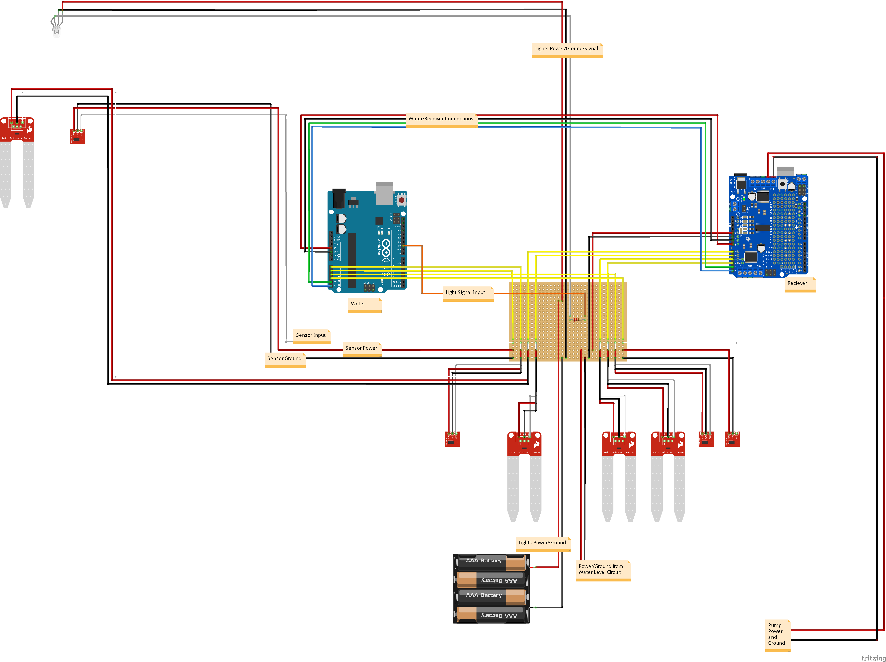

Firmware
Firmware
We controlled our system using an Arduino Uno R3 microcontroller.The microcontroller takes in sensor input and controls a series of individually adressable LEDs and a water pump based on the sensor values.
Arduino Control
 The microcontroller was connected to an AdaFruit motor shield because of the amount of current drawn by our individually addressable LEDs. (The current from the LEDs is enough to blow out an arduino, or more. Don't make our mistakes.)
Through the motor controller, we connected our sensors to analog pins, which we ran as input. The program took the sensor input and evaluated how the system, the lights and irrigation system, should respond given the input.
Because we had 8 sensor pins, we needed more analog inputs than just one Arduino Uno could offer us. We used use the Wire library from Arduino. The Wire library uses I2C communication between two Arduinos by attaching their respective A4 and A5 ports as well as ground and connecting the master Arduino's power to the recievers Vin.
Water Control and Reciever Control
The reciever code can be found in reciever_control.ino. This code controls everything for the water part of the system. It consists of an Arduino and an Adafruit motor shield. The motor shield controls the pump, using the Adafruit Motorshield library, by initalizing it as a motor. It creates the pump as a motor and if it is to turn on it sets the speed equal to 200 (this was a value calibrated from testing and would probably have to change depending on the pump used). If the average of the four sensor values is below a certain threshold, the pump turns off and the the pump/motor speed is set to 0.
This code also recieves control from the writer and then prints the 8 different sensor values (the 4 soil sensors and the 4 light sensors) to the serial monitor which the Python GUI code then reads to give the user the information.
Light Control and Writer Control
The writer code can be found in writer_control.ino. This code controls everything for the light part of the system. The lights that we are using are individually adressable leds from Adafruit Neopixels. In order to control these we use the the Neopixel library.
We use the Daily Light Integral (DLI) to measure the amount of light plants have received in a day and determine if they need more. To learn more about DLI, you can look at the resources offered here. The program also writes to the reciever using the Wire library.